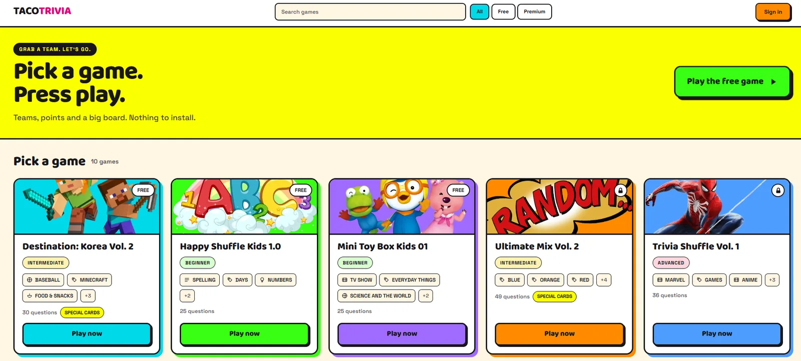
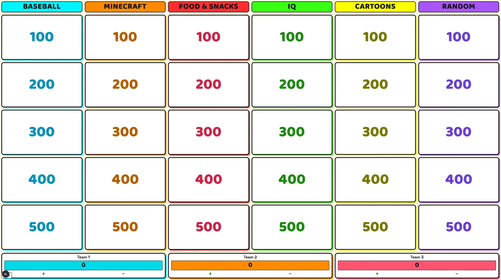
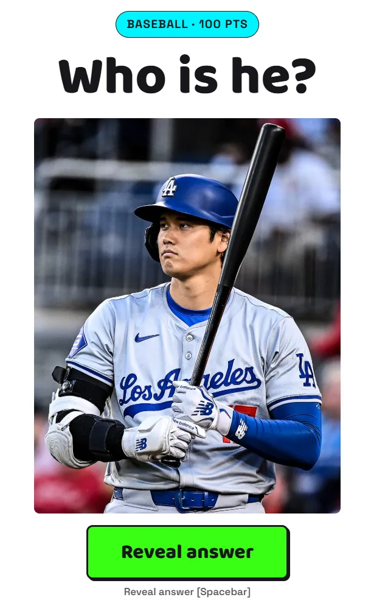
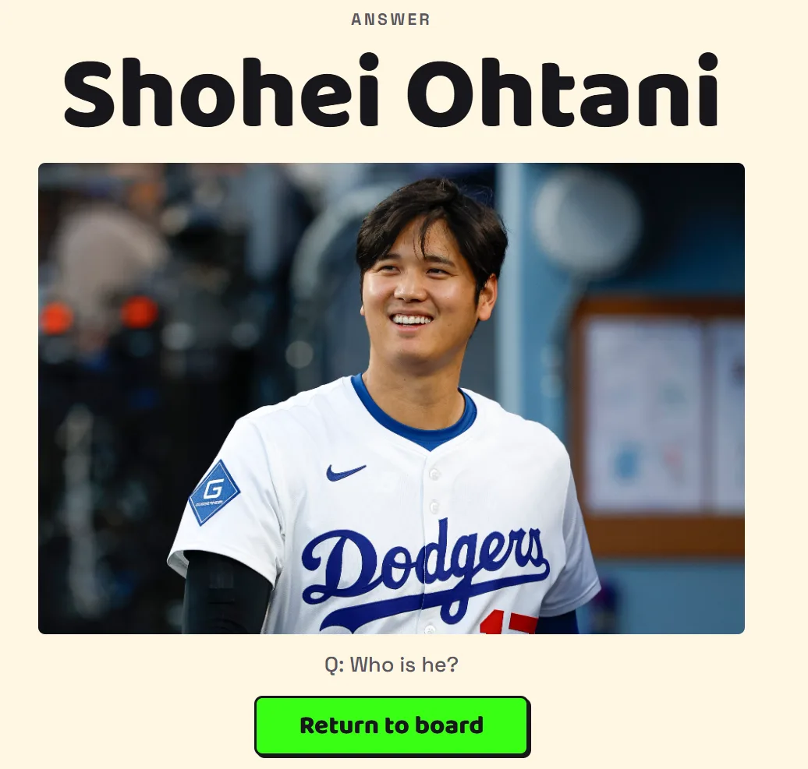
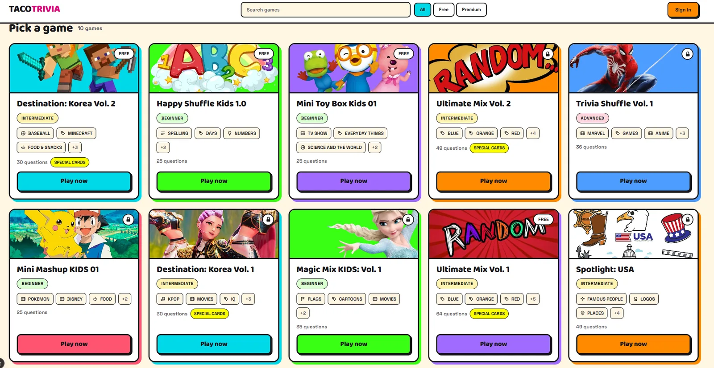
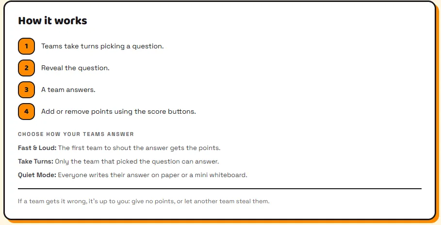
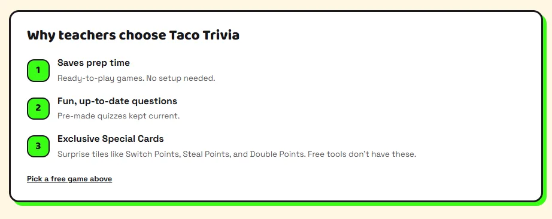
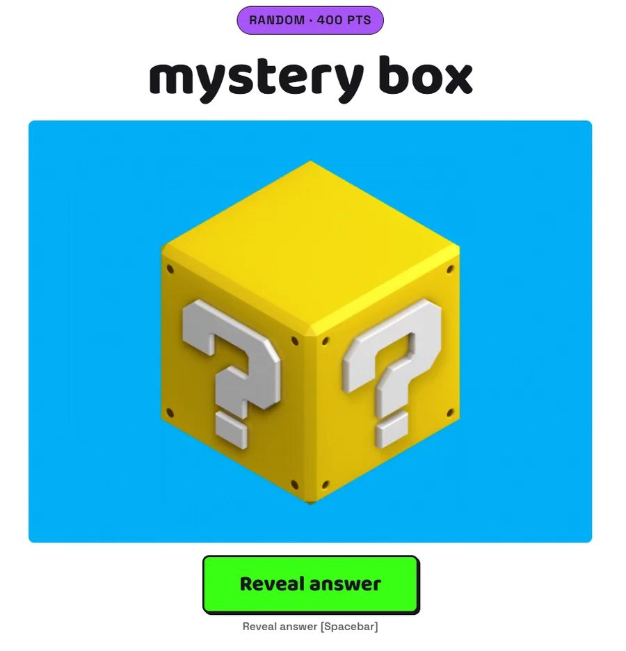
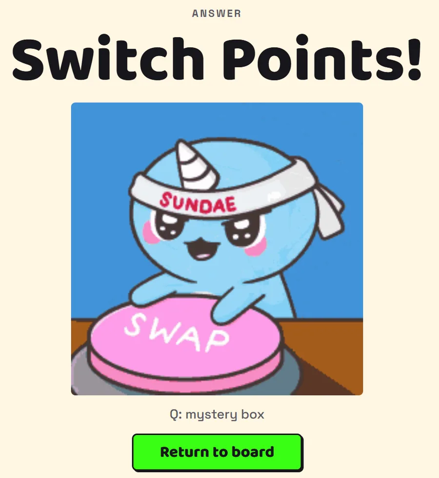

I built the quiz game my classroom actually needed.
Taco Trivia is a projector-first trivia platform for ESL teachers. One teacher, one screen, teams shouting answers at each other - and not a single student device. Designed, built, secured and deployed by one developer: me.
10 games · 368 questions · 60 categories · Zero student logins
About
A teacher who learned to ship software
I teach English in Seoul, and I build the tools I wish my classroom had. Taco Trivia came out of the same weekly frustration every ESL teacher knows: a review lesson needs a game, building a good one takes an evening, and the ready-made platforms all want thirty students to take out thirty phones.
That last part is the whole design. Handing out devices costs five minutes, splits the room's attention, and turns a shared game into thirty private ones. So Taco Trivia has no student client at all - the teacher is the sole operator, the board is on the projector, and the students look at each other instead of at screens.
I designed it, wrote it, secured it, filled it with content and deployed it. Everything on this page is something I built, measured, or broke and fixed myself.
Case study
One screen, one referee, no devices
How a recurring lesson-prep problem became a deployed, paywalled web application - and why the biggest architectural decision was something the app deliberately does not do.
The problem
Review lessons need a game. Building a good one takes an evening I don't have, and the existing platforms are built around student devices - which in a real classroom means five minutes of setup, thirty distractions, and a room full of kids staring down instead of at each other.
The generic content is the other half of it. My students want questions about Minecraft, K-pop, Pokémon and the food they actually eat, not stock trivia about the capital of Peru.
The decision that shapes everything
Host-controlled, with no multiplayer at all. There is no student client, no realtime channel and no server-side game session. A live game lives entirely in the teacher's browser tab as a single useReducer store - teams, scores, played tiles and the phase machine.
That removes an entire category of work - sockets, lobbies, reconnects, session state, sync bugs - and it is why a game cannot collapse mid-lesson because the school Wi-Fi hiccupped. Games are stored as reusable templates and fetched once; nothing about a running game is ever persisted.
My role
All of it: product decisions, UX, the Next.js frontend, the API routes, the PostgreSQL schema and row-level security model, the payment integration, the admin CMS, the content itself, and the deployment.
Including the unglamorous parts - finding and closing a privilege-escalation hole in my own schema, and re-measuring a layout after it failed on a classroom TV.
How it's built
Next.js 16 (App Router) and React 19 on Vercel, with Supabase for PostgreSQL, auth and row-level security, and Paddle as merchant of record. Access control is enforced in two layers: RLS policies are the real boundary, middleware guards the admin routes.
Teachers never touch a database. A separate admin CMS builds the boards - categories, point tiers, tiles, media, cover art and difficulty level - so shipping a new game is content work, not a deploy.
Why Paddle and not Stripe
Stripe does not support payouts to Korea, where I live. Paddle does - and as merchant of record it also absorbs the cross-border VAT and tax compliance that a solo developer would otherwise carry personally. Entitlements are granted in exactly one place: a signature-verified transaction.completed webhook. Nothing else in the codebase can grant access.
See it in action
Designed to be read from the back row
Every decision on these screens came out of a real lesson: type that scales with the screen, scores the teacher can reach without leaving the game, and nothing on the board that needs explaining.







A feature I cut
Special Cards: deleting the code, keeping the fun
The most useful engineering decision in this project was removing a system I had already built.
What it was, and why it went
Tiles could be flagged as chaos cards - steal, shield, switch, bomb - with a splash screen and a whole branch of game logic behind them.
The problem. The splash screen only ever described the effect. The teacher still had to apply the score change by hand. I had built a rules engine that announced rules and enforced none of them.
What I did. Deleted it. The effects branch, the splash route and the game-logic coupling all came out. The database columns stayed for backward compatibility, and nothing in gameplay reads them any more.
What replaced it. The admin drops an ordinary-looking image onto any tile. When the class flips it, the teacher decides on the spot what happens and uses the score buttons that already exist. Same surprise, same laugh, none of the code.
It survives publicly as a single labelling flag that puts a "Special Cards" badge on a game card - because the thing that sells was never the state machine. It was the moment the class realises a tile is not a question.


Engineering
Three problems worth writing down
Each of these was found in production or in a real classroom, root-caused, and fixed with a rule that stops it coming back.
1. My own schema let users promote themselves
The hole. An RLS using clause scopes rows, not columns. My "users can update their own profile" policy was row-correct and column-blind - so any signed-up user could call the public REST endpoint with the anon key, patch their own row, and set role = 'admin' or has_all_access = true. Every paid game, free, from a browser console.
The fix, in three layers. Column-level grants so authenticated users may write only their email; the row policy re-created with a with check; and a before update trigger that reverts the privilege columns whenever the caller is anon or authenticated - the backstop for the day someone re-runs a blanket grant in the dashboard.
Verified live. The patch now returns 42501 on the privilege columns, email still updates, and the payment webhook's grant path still works.
2. The paywalled games advertised "0 questions"
The bug. The public library derived each card's question count from an embedded questions select. RLS filtered that embed exactly as designed - premium questions are invisible without the pass - so every locked game reported zero questions on the page whose entire job was to sell it. The security model was working perfectly and quietly killing the funnel.
The fix. The listing route now tallies counts with the service-role client into a dedicated field, while the gameplay route still enforces the paywall unchanged.
The rule that came out of it. That listing route runs as service-role now, so it must never be extended to select question content - and a count must never again be derived from an array length on a listing response.
3. It fit on my monitor and broke on a classroom TV
The report. On a real classroom TV the team panels overlapped the board, and "Return to board" sat below the fold. On my 2560×1440 monitor everything was fine.
The cause. One root cause for both: the projected screens were sized off the viewport's width while the thing running out was its height. A 16:9 TV window has a big monitor's width and far less height, so every width-derived size was correct on my desk and too tall in the room.
Measured, not guessed. Reproduced with Playwright at five viewport sizes: the board overlapped by 49px, 129px and 97px at the three short ones, and not at all at 2560×1400. Three rules came out - cap type on both axes, make fractional grid rows minmax(0,1fr) so they can actually shrink, and give each screen exactly one flexible block that absorbs the leftover height.
Smaller things only a real room teaches you
- 1Neon category colours are invisible on whiteCategory colours are free text the admin picks. A helper darkens any chosen colour stepwise until it clears WCAG AA against white, so a neon-yellow column is legible instead of blank.
- 2Team names are learned after the board is upTeachers find out what the class wants to be called during the game, so names became click-to-edit on the board - which promptly exposed a pre-existing bug where pressing Escape to cancel an edit also left the game.
- 3Images arriving mid-sentence break the readQuestion text painted instantly and its picture landed seconds later, over the teacher's voice. The board now preloads every tile's media while the teacher is still choosing a tile.
- 4Played tiles stay clickable - on purposeA spent tile looks spent, but it still opens. Classes ask to see one again, and a locked tile serves the state machine rather than the room.
- 5Borrowed images disappearPasted image URLs can be re-hosted into Supabase Storage in one click from the builder. All 411 media URLs in the live library are now self-hosted - no hotlinks left to rot.
Where it stands
Built, deployed, and played
Every number here comes from the live database or the codebase, not an estimate.
What's live
Deployed on Vercel and playable now. Free games run start to finish with no account at all - that is the teacher's test drive, and it is deliberately a whole game rather than a demo.
The full purchase loop - paywall, overlay checkout, signed webhook, entitlement granted - has been verified end to end in Paddle's sandbox.
What's next
Going live on payments. Paddle is still in sandbox, so the site cannot take real money yet. That needs a production account, domain approval and a new set of credentials - deliberately the last step, after the product was worth charging for.
Merging into Class Cookies. Taco Trivia is being folded into a single subscription platform alongside two sibling classroom games, so one subscription gives a teacher everything.
Links
Go and look at it
The application source is private - Taco Trivia is a commercial product with paid content. This repository holds the case study and screenshots; code excerpts are available on request.